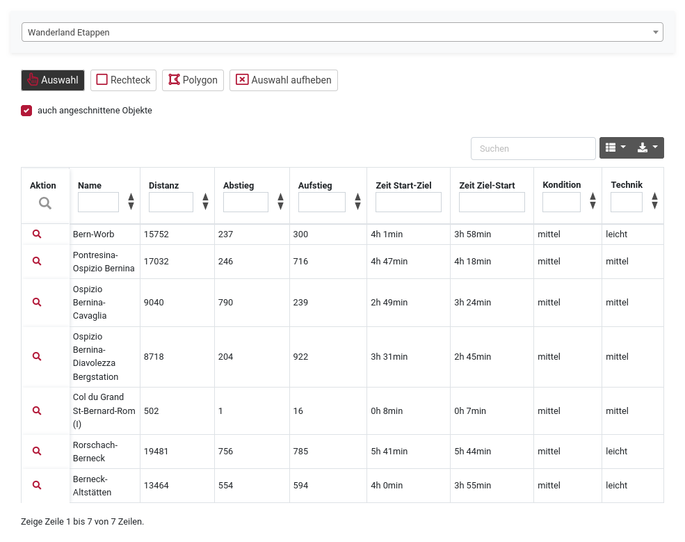
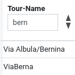
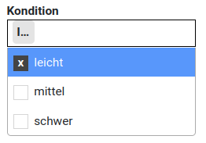
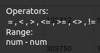

Die Funktionalität der Listen beinhaltet:
Es kann über jede Spalte oder Kombination von Spalten gefiltert werden. Je nach Spalteninhalt stehen verschieden Arten von Filter zur Verfügung:

Textfelder: beliebige Texteingabe, es wird nach dem eingegebenen Text gefiltert.
Im Beispiel: bern -> Via Albula/Bernina, Via Berna ...
Filter aufheben: Feld löschen oder auf die Funktion "Auswahl aufheben" klicken

Auswahlfelder: Felder mit fixen Einträgen, einfache oder mehrfache Selektion des Filters.
Besipiel: Kondition leicht, mittel und/oder stark, wahlweise kombiniert mit einem Textfilter wie oben.
Filter aufheben: Filter deselektieren oder auf die Funktion "Auswahl aufheben" klicken.

Numerische Felder: numerische Operatoren: grösser, kleiner, gleich etc. oder Bereiche von-bis.
Beispiel, z.B. Filter über die gewünschte Distanz: <4000, 4000-6000, >10000 etc.
Besipiel Kombination mit Auswahlfelder: Distanz <4000 und Kondition leicht und Technik leicht; oder für die Herausforderung: Distanz > 10000, Kondition schwer und Technik schwer
Filter aufheben: Feld löschen oder auf die Funktion "Auswahl aufheben" klicken.
Es stehen folgende Selektionsmöglichkeiten zur Verfügung, die wahlweise mit den oben erwähnten Filter kombiniert werden können. Optional nur ganze Objekte oder auch angeschnittene. Die Auswahl wird in der Liste wiedergegeben.
Spaltenselektion: selektieren und deselektieren der anzuzeigenden Spalten.
Export-Funktion: JSON, XML, CSV, TXT, SQL, MS Excel